Removing and Installing/Replacing Exhaust Camshaft
11 31 028 - Removing and installing/replacing exhaust camshaft (N52K)

Special tools required:
- 00 9 120
- 11 4 350
- 11 4 461
- 11 4 462
- 11 4 463
- 11 9 000

Important!
It is absolutely essential to follow an exact procedure for removing and installing the exhaust camshaft.
Risk of damage!
The upper and lower bearing banks must be tensioned with a total of six special tools 11 4 461.

Necessary preliminary tasks:
- Remove cylinder head cover
- Remove exhaust adjustment unit
- Adjust valve timing
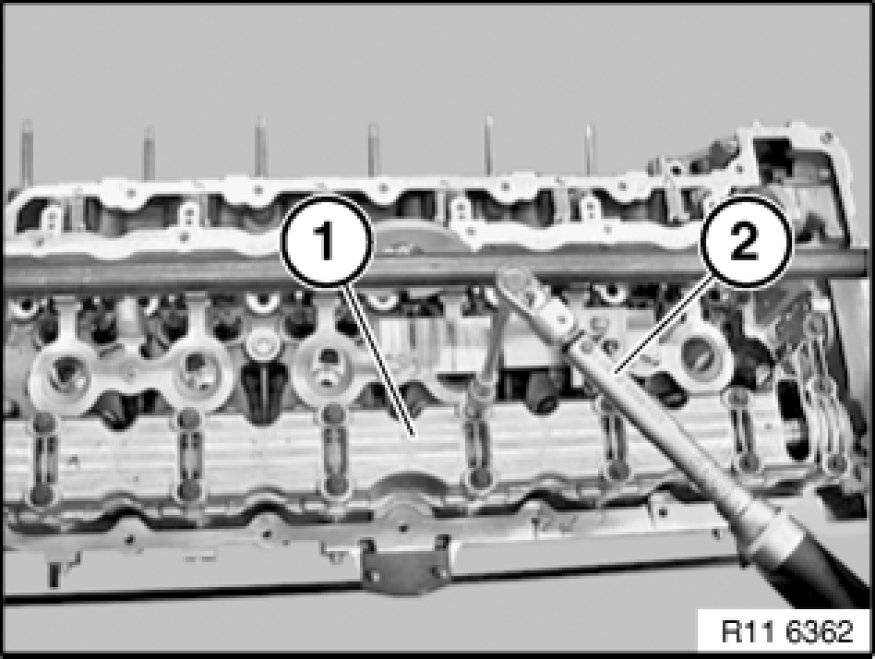
The screw connection of the bearing banks must be released from the outside inwards.
Lift out upper and lower bearing banks (1) with exhaust camshaft.
Remove upper bearing bank (1).
Remove exhaust camshaft from lower bearing bank.
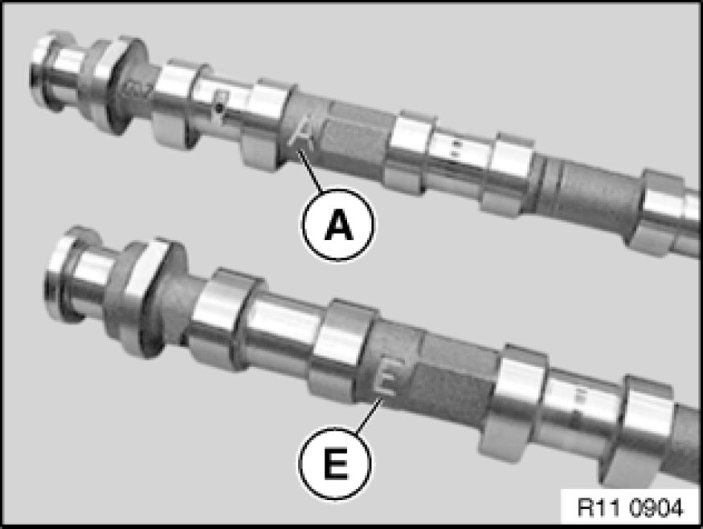
Important!
Markings of inlet and exhaust camshafts are different.
Mixing up the inlet and exhaust camshaft will result in engine damage.
A - Exhaust camshaft.
E - Inlet camshaft
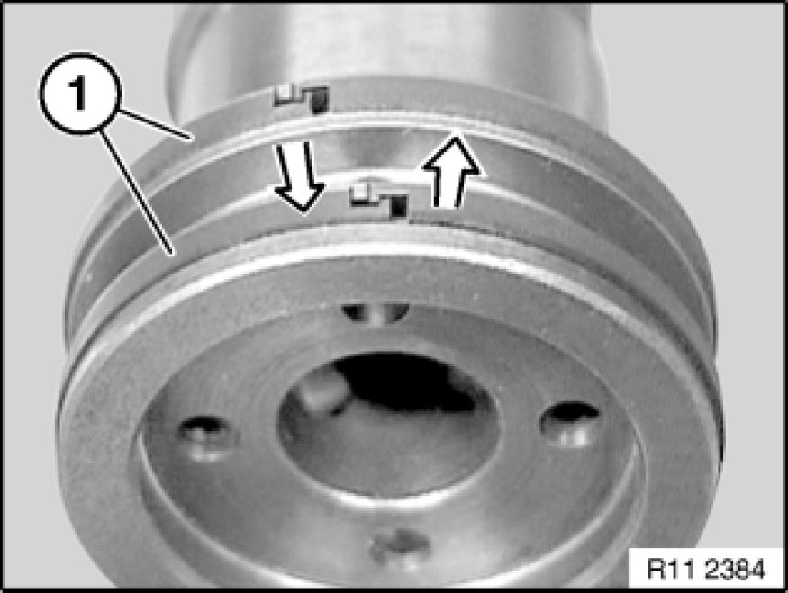
Check plain compression rings (1) for damage and replace if necessary.
Plain compression rings (1) are engaged at joint.
Press plain compression rings (1) apart upwards and downwards and removed towards front.
Important!
Plain compression rings (1) can easily break.
Important!
Removal on engine:
Set engine to firing TDC at 1st cylinder.
Removed cylinder head:
When using special tool 11 9 000, it will be necessary to remove the aluminium profile insert.
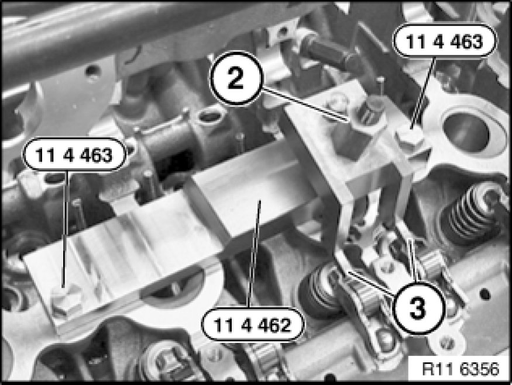
Mounting bearing bank:
Pre-install special tool 11 4 462 on cylinder no. 2.
Insert special tool 11 4 463 in screw connection of cylinder head cover.
Important!
Special tool 11 4 463 is a special screw.
Press down cam followers (3) on cylinder no. 2 with spindle nut (2) of special tool 11 4 462.

Installation Note:
Before mounting the exhaust camshaft on the correct cam follower seat (1), pay attention to the hydraulic valve clearance adjustment element and the valve.
Refer to Removing and installing/replacing all cam followers.
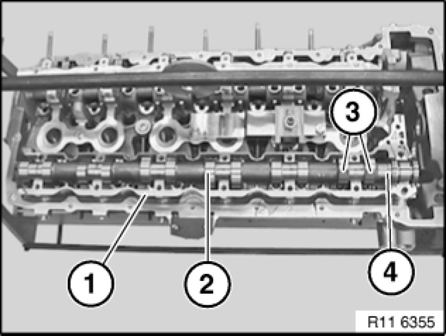
Position lower bearing bank (1) with exhaust camshaft (2) cam followers.
Align exhaust camshaft (2).
Cylinder nos. 2 and 4 are at valve overlap.
Cams (3) on cylinder no. 1 point upwards at an angle.
Part number (4) on twin surface of exhaust camshaft (2) points upwards.
Important!
There must be no adhesive residues in the cylinder head tapped holes.
Clean tapped holes.
Fit upper bearing bank (1).
Insert bolts dry.
Tension down upper bearing bank (1) with exhaust camshaft at bearing points 3 and 5 through a 1/2 bolt turn.
Join exhaust camshaft to upper and lower bearing banks (1) with torque wrench (2) from inside outwards to 8 Nm.
Release all screws of upper bearing bank (1) from outside inwards by 90°.
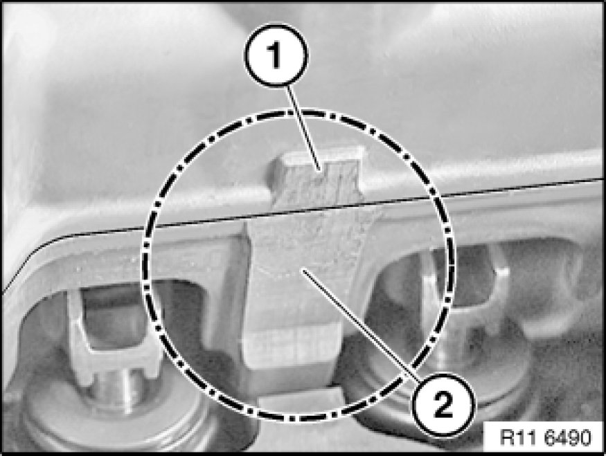
Installation Note:
Upper and lower bearing banks must be aligned to each other at ground surfaces (1 and 2).
Make sure that the thrust piece and the legs of special tools 11 4 461 rest on the milled surfaces.
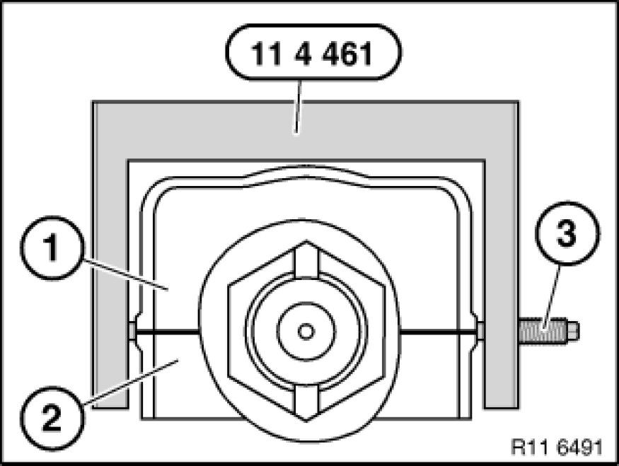
Note:
Schematic depiction of special tool 11 4 461 at upper bearing bank (1) and lower bearing bank (2).
Pretension all special tools 11 4 461 with special tool 11 4 350 only.
Important!
Tighten screw (3) on thrust piece to 2 Nm. Risk of damage!
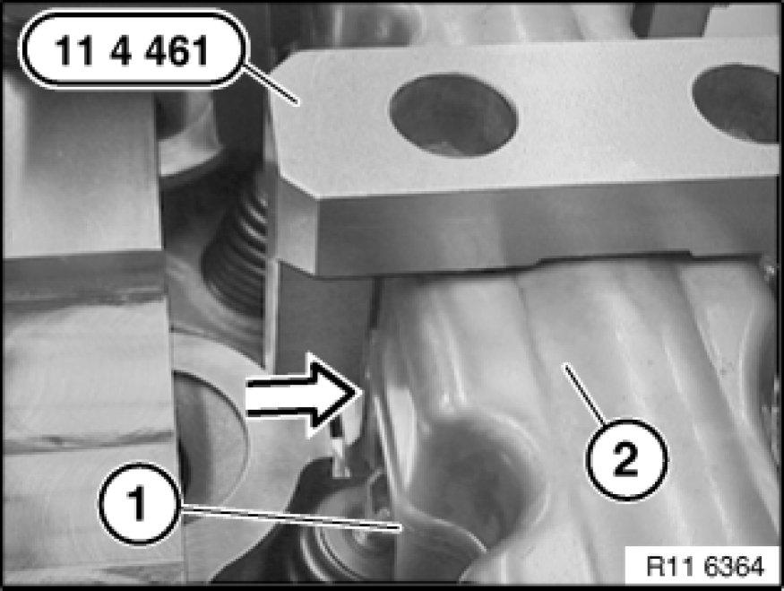
Position special tool 11 4 461 over screw connection of bearing banks.
Make sure that the legs rest exactly on the ground surfaces of the upper bearing bank (2) and lower bearing bank (1).
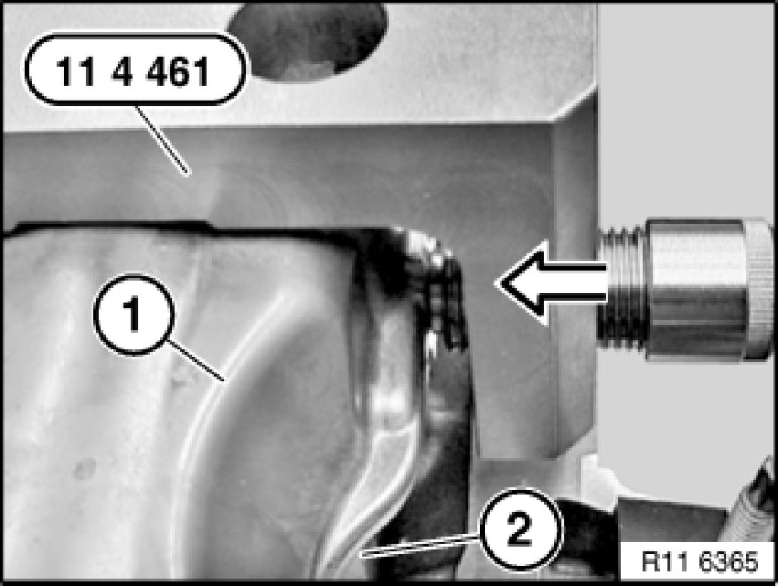
Initially tighten screw of special tool 11 4 461 to ground surfaces of upper bearing bank (1) and lower bearing bank (2).
Important!
Tighten screws on thrust piece to 2 Nm. Risk of damage!
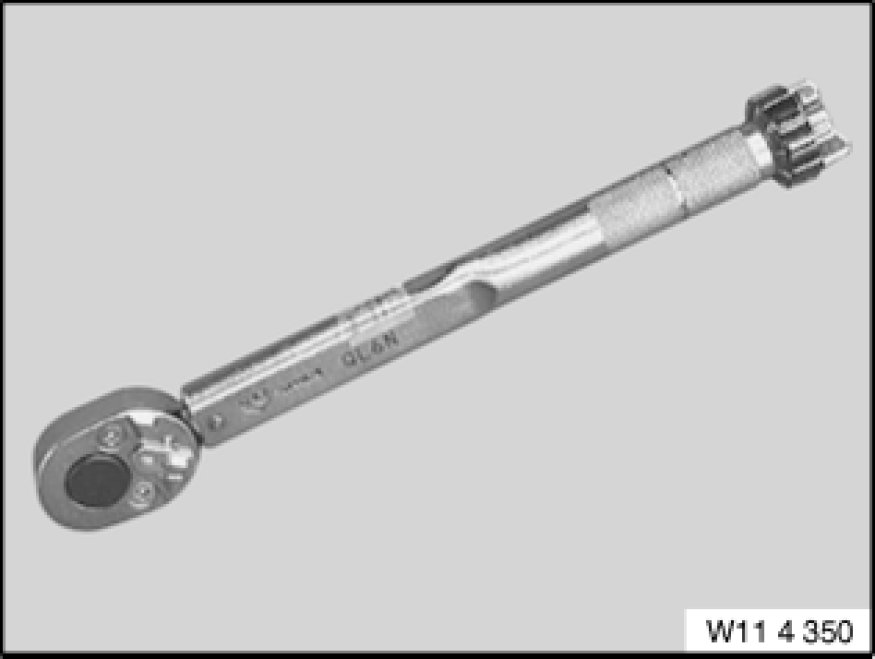
Important!
Set special tool 11 4 350 to 2 Nm.
Pretension all special tools 11 4 461 with special tool 11 4 350 only.
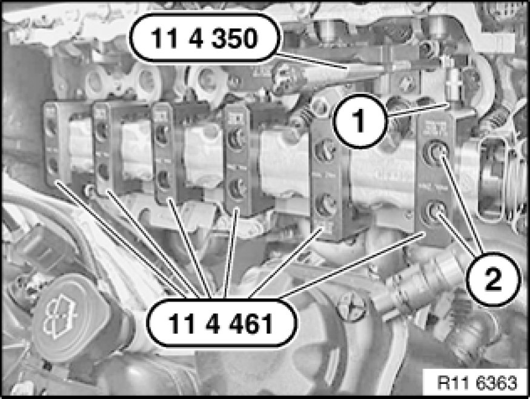
Mount special tools 11 4 461 with screw (1) to inside of cylinder head.
Mount special tool 11 4 461 with screw facing outwards on cylinder no. 2.
Position special tools 11 4 461 so that screw connections (2) of bearing bank are easily accessible.
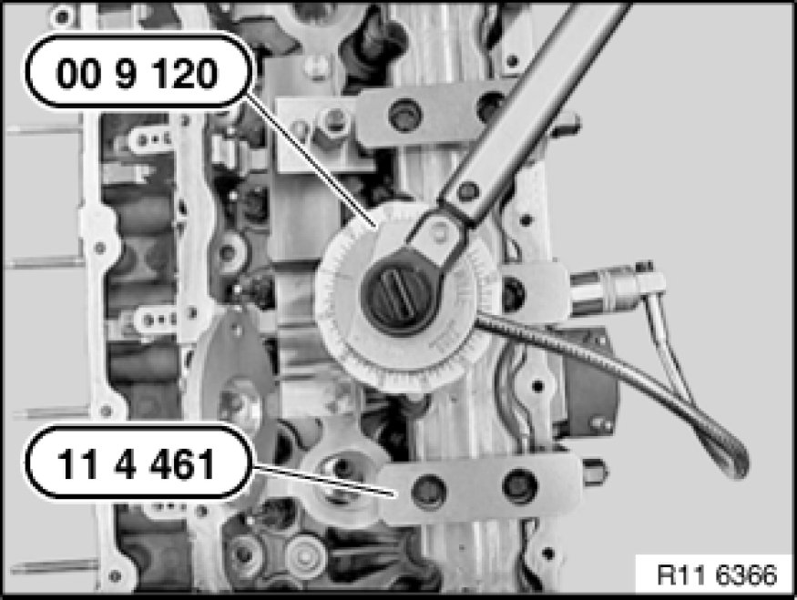
Tighten upper and lower bearing banks with special tool 00 9 120.
Tightening torque 11 31 1AZ.
Important!
Remove special tool 11 4 461 only when exhaust camshaft screw connection is completed.

Assemble engine.